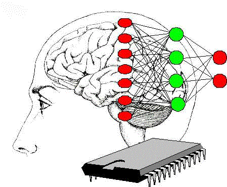
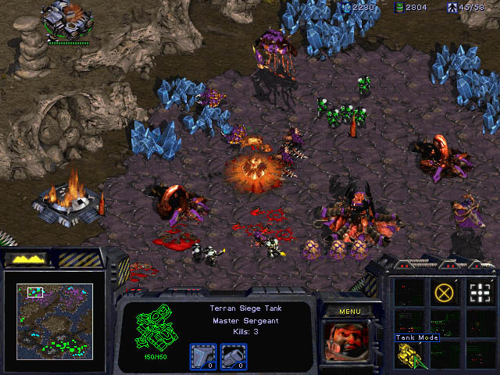

Inteligencia Artificial
Claudio Vaucheret
Historia
Created: 2022-08-24 mié 11:20
Historia de la IA
Historia y evolución de la IA
| Aristóteles - 300AC. | Silogismos. Manera estructurada un conjunto de reglas, funcionamiento de la mente humana al seguirlas reproducen concluciones racionales. |
Historia y evolución de la IA
| Ramon Llull - 1315 | En el año 1.315 (que fue su fecha de publicación aunque comenzó a trabajar en esta obra sobre 1.275), |
| Ramon Llull expresó en el Ars Magna la idea de que el razonamiento podía implementarse de manera artificial en un artefacto mecánico. |
https://hipertextual.com/2012/03/inteligencia-artificial-ramon-llull-ars-magna
Historia y evolución de la IA
El Turco: ¿jugador "automático" de ajedrez? - 1770
| El Turco | Reconstrucción de El Turco |
Historia y evolución de la IA
R.U.R.(Rossum's Universal Robots) - 1921
- Obra teatral de ciencia ficción en el Teatro Nacional de Praga1
- Primera aparición del término robot.
- Ideada por el hermano del autor, Josef Capek (1887 - 1945) a partir de la palabra checa robota, que significa "Trabajo forzado"
- Este término vendría a sustituir a automat, que había empleado Josef en el relato corto de 1917 Opilec (El borracho).
Un hombre, una mujer y tres robots.
Karel Capeken (checo)
Historia y evolución de la IA
| Leyes de Asimov - 1942. | En la ciencia ficción las tres leyes de la robótica son un conjunto de normas escritas por Isaac Asimov, que la mayoría de los robots de sus novelas y cuentos están diseñados para cumplir. |
- Un robot no hará daño a un ser humano o, por inacción, permitir que un ser humano sufra daño.
- Un robot debe obedecer las órdenes dadas por los seres humanos, excepto si entrasen en conflicto con la Ley 1.
- Un robot debe proteger su propia existencia en la medida en que esta protección no entre en conflicto con la Ley 1 o 2.
Historia y evolución de la IA
Modelo de neuronas Artificiales - 1943.

Se considera como el primer trabajo de la IA a: A logical calculus of the ideas immanent in nervous activity W.S.McCulloch - W.Pitts (1943) Se basaba en tres puntos:
- La fisiología básica de las neuronas del cerebro
- Lógica proposicional de Russell y Whitehead
- La Teoría de Computación propuesta por Turing.
Historia y evolución de la IA
Modelo de neuronas Artificiales - 1943.
Warren McCulloch (1898 - 1969)
Walter Pitts (1923 - 1969)
McCulloch y Pitts propusieron un modelo de neuronas artificiales y demostraron que cualquier función computable podía serlo por alguna red de neuronas artificiales y que todo conectivo lógico podia ser implementado por estructuras de red simples. Idea de aprendizaje
Sugerían en su trabajo que estas redes podían aprender.
Historia y evolución de la IA
| Donald Hebb | D.Hebb - 1949. Hebb demostró que una regla de actualización, que se conoce como aprendizaje de Hebbian y que modificaba la fortaleza de la conexión, permitía que ocurriera el aprendizaje. |
Historia y evolución de la IA
Marvin Minsky y Dean Edmonds - 1950.

- Construyeron la primera computadora basada en redes neuronales (SNARC).
- Más tarde Minsky en su tesis doctoral estudia la computación en redes neuronales. El jurado dudaba en si esta clase de trabajo podría considerarse matemática. John von Neumann que era miembro del mismo aseguró: Si hoy este trabajo no es matemática algún día lo será
- Minsky mostró con su investigación en Redes Neuronales algunas limitaciones.
Historia y evolución de la IA
| Alan Turing 1950 | Se analizaba la pregunta: Can Machines Think? Para responderla propone el Test de Turing ( test operacional). Se presentó una lista de 9 posibles objeciones a la posibilidad de que una máquina pensara Introduce la idea de aprendizaje, algoritmos genéticos y aprendizaje por refuerzo. A comienzos de los 50s, Claude Shannon y Alan Turing propusieron técnicas para realizar programas que jugaban ajedrez. |
Historia y evolución de la IA
| Arthur Samuel | Juegos de damas - 1952 Escribió un programa que jugaba ajedrez y eventualmente aprendía a jugar hasta lograr un nivel alto de competencia. Al igual que Turing, Samuel tenía problemas en encontrar tiempos de cómputo. Trabajaba de noche. |
Historia y evolución de la IA
| John McCarthy (1927 - 2011) | Nace en Dartmouth College el término "Inteligencia Artificial"- 1956 McCarthy convenció a Minsky, Shannon y Rochester para realizar una reunión de los investigadores interesados en Teoría de Autómatas, Redes Neuronales y el estudio de la inteligencia. Se organizó un Workshop de dos meses en Dartmouth College durante el verano de 1956. |
Historia y evolución de la IA
 Herbert Simon y Allen Newell Herbert Simon y Allen Newell |
Programa que razonaba Logic Theorist- 1956 Simon afirmó: Hemos inventado un programa de computadora que es capaz de pensar en forma no numérica, y por lo tanto hemos resuelto el venerable problema Mente-Cuerpo Este programa fue capaz de probar la mayoría de los teoremas en el Capítulo 2 del Principia Mathematica de Russell y Whitehead, encontrando incluso una demostración más elegante que la contenida allí. Russell se mostró encantado con el resultado. |
https://history-computer.com/ModernComputer/Software/LogicTheorist.html
Mucho entusiasmo (1952-1969)
Look, Ma, no hands!
Estos años estuvieron llenos de éxitos sobre situaciones limitadas
En esos tiempos existía concenso externo al área con la objeción Una máquina jamás podrá hacer X para un gran listado de X, que Turing se ocupó de enumerar en su trabajo.
Los investigadores en IA respondían demostrando que X era posible para una X tras otra.
Mucho entusiasmo (1952-1969)
General Problem Solver (GPS) Este programa fue diseñado por Simon, Shaw y Newell para imitar los protocolos humanos de resolución de problemas Probablemente, este fue el primer programa que clasifica en la aproximación a IA de pensar humanamente.
Geometry Theorem Prover Rochester y sus colegas de IBM producen uno de los primeros programas de IA, en 1959.
Mucho entusiasmo (1952-1969)
John McCarthy (1958)
- En el MIT AI Lab Memo No. 1 definió el lenguaje LISP basado en el Cálculo Lambda.
- Motivado por la falta de tiempo de cómputo, inventó el Tiempo Compartido (time sharing).
- Publicó el artículo Programs with Common Sense: describía Advice Taker, un programa hipotético que puede considerarse como el primer sistema completo de IA. Las características centrales de la Representación de Conocimiento y Razonamiento ya estaban incluídas en Advice Taker: representación formal del mundo y manipulación por medio de procesos deductivos.
Mucho entusiasmo (1952-1969)
Marvin Minsky(1958)
En el MIT trabajó junto a McCarthy. Pero McCarthy tomaría un enfoque basado en lógica para la representación del conocimiento y el razonamiento, a diferencia del enfoque tomado por Minsky.
J.A. Robinson (1965)
Desarrolla el método de resolución, un algoritmo completo para la demostración de teoremas de la Lógica de Primer Orden. Este descubrimiento acelera los resultados de McCarthy, que en 1963 se muda a Standford.
Mucho entusiasmo (1952-1969)
| Shakey (1968) Standford Research Institute. El SRI desarrolló el primer proyecto robótico |
Mucho entusiasmo (1952-1969)
Marvin Minsky
Supervisaba trabajos sobre problemas acotados, los que aparentemente requerían inteligencia para ser resueltos. Estos dominios limitados se conocieron como micro-mundos.
| Mundo de Bloques | Existieron diferentes programas para diferentes micro-mundos, pero el micro-mundo más conocido es el mundo de bloques. |
Mucho entusiasmo (1952-1969)
Redes Neuronales
- Winograd y Cowan (1963) mostraron que una gran cantidad de elementos juntos podían representar un único concepto, con la correspondiente mejora en la robustez y el paralelismo.
- En 1962, el método de Hebb de aprendizaje fue mejorado por Widrow y Hoff (redes adalines) y Rosenblatt (perceptrones).
Una dosis de realidad(1966-1973)
La euforia ... hace a los investigadores predecir los éxitos futuros
Herbert Simon
En 1958 predijo que en 10 años una computadora sería campeón de ajedrez, y que una computadora demostraría un importante teorema matemático.
Sin embargo, esto ocurrió 40 años después …
Los avances sobre micro-mundos fallaban al resolver problemas más dificultosos
Una dosis de realidad(1966-1973)
Problema 1
La mayoría de los programas contenía poco o nada de conocimiento de su tema. El éxito se daba por la simple manipulación sintáctica
Traducción doble del inglés al ruso y nuevamente al inglés:
The spirit is willing but the flesh is weak
se convirtió luego de pasar al ruso y volver a ser traducida por la máquina en:
The vodka is good but the meat is rotten
En 1966 el gobierno canceló el financiamiento a estos proyectos.
Una dosis de realidad(1966-1973)
Problema 2
Intratabilidad de los problemas que la IA intentaba resolver
La mayoría de los programas de IA resolvían problemas probando diferentes caminos hasta encontrar una solución (explosión combinatoria).
Esto funcionaba para micro-mundos y los investigadores creían en la hipótesis que con máquinas más potentes y con más memoria, se los podía extender para solucionar problemas del mundo real.
Este optimismo desapareció con el desarrollo de la Teoría de la Complejidad Computacional :(
Una dosis de realidad(1966-1973)
Problema 3
Limitaciones en las estructuras básicas utilizadas para generar comportamiento inteligente
Minsky y Papert (1969) publicaron Perceptrons donde demostraron que si bien los perceptrones eran capaces de aprender cualquier cosa que pudieran representar, en realidad podían representar muy poco
Aunque estos resultados no se aplicaban a las redes más complejas multi-capa, el financiamiento para la investigación en redes neuronales se canceló
Irónicamente, en 1969 Bryson y Ho desarrollaron un nuevo algoritmo de apredizaje por back-propagation para redes multicapas, que dió lugar al resurgimiento de las redes neuronales en los 80s
Sistemas Basados en Conocimiento (1969-1979)
Métodos Débiles
En la primera década de investigación en IA, la resolución de problemas se basaban en métodos de búsqueda de propósito general, con utilización de poca información del dominio.
El cambio se dirige al uso de más conocimiento específico de un dominio que permita razonamiento más poderosos y el manejo más sencillo de casos típicos en áreas más circunscriptas.
Sistemas Basados en Conocimiento (1969-1979)
DENDRAL (1969)
Primer Sistema Basado en Conocimiento, desarrollado en Standford por E.Feigenbaum. Infería estructura molecular de un compuesto a partir de información provista por un espectrómetro de masa y la fórmula química. Su calidad de experto provenía del gran número de reglas de propósito general que utilizaba. Los sistemas posteriores utilizaron un enfoque en el que se separaba el conocimiento en forma de reglas del componente de razonamiento.
Sistemas Basados en Conocimiento (1969-1979)
MYCIN (1969)
Desarrollado por E.Feigenbaum, B.Buchanan y E.Shortliffe. Tenía la capacidad de diagnosticar enfermedades infecciosas en la sangre. Una diferencia con DENDRAL fue que no poseía un modelo teórico que sustentara las reglas que utilizaba.Las reglas provenían de entrevistas con expertos del área. Otra diferencia importante, fue que MYCIN incorporó un cálculo de incertidumbre llamado factor de certeza, que reflejaba la propia incertidumbre del conocimiento médico al diagnosticar.
Sistemas Basados en Conocimiento (1969-1979)
SHRDLU
Desarrollado por T.Winograd en el área de entendimiento de lenguaje natural que utilizaba gran cantidad de conocimiento en el dominio del mundo de bloques.
Otros avances
Se desarrollaron diferentes lenguajes de representación de conocimiento y razonamiento
Prologse vuelve popular en Europa.- Minsky en 1975, introduce la idea de frames.
IA se vuelve una industria(1980-presente)
Sistema Experto R1 (1982)
Desarrollado por D.McDermott para DEC con el propósito de ayudar a configurar los pedidos de nuevos sistemas de cómputo. En 1986, DEC reportó haber ahorrado u$a 40M por año. Para 1988, DEC tenía ya 40 sistemas en funcionamiento.
Proyecto Quinta Generación (Japón-1981)
Se construirían máquinas cuyo lenguaje máquina sería Prolog con el objetivo de acelerar la capacidad de inferencia de los sistemas. Este proyecto no tuvo éxito pero impulsó el desarrollo de la IA en USA, Europa y otros paises del mundo.
(1988–93) La industria de los sistemas expertos decae: "Invierno de IA"
Vuelven las Redes Neuronales(1986-presente)
- A mediados de los años 80, al menos cuatro grupos diferentes reinventaron el algoritmo de back-propagation desarrollado en 1969 por Bryson y Ho.
- El algoritmo fue aplicado a diferentes problemas de aprendizaje en Ciencias de la Computación y Psicología.
Vuelven las Redes Neuronales(1986-presente)
Compiten los modelos:
- Conexionismo: presenta los fenómenos de la mente y del comportamiento como procesos que emergen de redes formadas por unidades sencillas interconectadas. Hay muchas formas de conexionismo, pero las formas más comunes son los modelos de redes neuronales.
- Simbólico
La IA adopta el Método Científico (1987-presente)
- A fines de los 80s se produce una revolución en el contenido y en la metodología de investigación de la IA.
- Algunos han visto este cambio como una victoria de los neats(pulcros), aquellos que piensan que las teorías en IA deben sustentarse en rigor formal, sobre los scruffy(desaliñados), aquellos que piensan que se deben construir prototipos y analizar aquellos que parecen funcionar.
- Ambas percepciones son necesarias y quizás al reenfocarse en aproximaciones más formales se demuestra una mayor madurez de la disciplina.
La IA adopta el Método Científico (1987-presente)
- Se comenzó a tratar de construir sobre la teoría existente en lugar de seguir creando nuevas teorías, a fin de:
- fundamentar las afirmaciones en teoremas rigurosos o evidencia experimental en vez que en la intuición; y
- de mostrar la relevancia de las aplicaciones en el mundo real en vez de en mundos de juguete.
La IA adopta el Método Científico (1987-presente)
- Algunos ejemplos son:
- Reconocimiento Automático de Voz: utiliza modelos de Markov.
- Data Mining - Minería de Datos: consiste en la extracción no trivial de información que reside de manera implícita en los datos.
- Redes Bayesianas: formalismo que permite representación eficiente y razonamiento riguroso de conocimiento incierto.
Agentes, agentes, en todas partes… (1995-presente)
| Agente 86 | El enfoque en el diseño de una entidad inteligente completa, el Agente ha llevado a la necesidad de ensamblar diferentes resultados en una sola arquitectura. |
AI a nivel humano(2004)
- IA a nivel humano otra vez en la agenda …
- Varios investigadores como McCarthy, Minsky, Nilsson, Winston piensan que la IA debería poner menos énfasis en crear versiones mejoradas de aplicaciones que son buenas para una tarea específica como manejar autos o jugar ajedrez.
- En vez, piensan que la IA debería volver a sus raices y esforzarse en, según palabras de Simon: máquinas que piensen, que aprendan y que creen.
- Esto se conoce como el esfuerzo de la IA a Nivel Humano.
Disponibilidad de grandes volumenes de datos (2001-presente)
Desde el comienzo la Ciencias de la Computación puso énfasis en los algoritmos.
Actualmente, hay que preocuparse por los datos.
Limitaciones de la IA
IA Fuerte vs. Débil
IA Fuerte Una máquina que piense deberá tener conciencia y mente real.
IA Débil Las máquinas podrían actuar como si ellas fueran inteligentes.
IA Fuerte vs. Débil
Para pensar..
- Pasar el test de Turing significa que la máquina simula pensar. ¿Vuela un avión? ¿Nada un submarino?
- Intención real de realizar algo.
- Estados mentales reales.
- Ser conciente de sus actos.
IA Fuerte vs. Débil
Afirmaciones de John Searle
- Los programas de computadora son formales (sintácticos).
- Las mentes humanas tienen contenidos mentales (semántica).
- La sintaxis por sí misma no es consitutiva ni es suficiente para la semántica.
- Los cerebros hacen que tengamos mente.
IA Fuerte vs. Débil
El cuarto chino (J. Searle) Propuesto por Searle para demostrar que la idea de IA Fuerte es errónea.
Inteligencia Artificial o Sintética
- Artificial Hecho por el hombre. Sugiere que es algo de calidad diferente a lo natural. Por ejemplo, lago artificial, brazo artificial.
- Sintético Producto obtenido por procedimientos mecánicos,electrónicos o industriales y que imita otro producto natural. Por ejemplo, la perla de cultivo, césped sintético.
- ¿Computacional?
Ética y Riesgos de desarrollar IA
Delegamos
- Las computadoras están haciendo mucho por nosotros sin nuestra intervención.
- Le estamos dando el control a las computadoras, aun en tareas críticas de seguridad. Ejemplos, fly-by-wire (vuelo por cable), donde se confía en el juicio del sistema más que en la experiencia del piloto.
- Lo siguiente en la agenda: fly-by-wire cars, sistemas de frenado inteligente, control de la navegación que mantiene distancia de un auto al de enfrente \(\ldots\)
Ética y Riesgos de desarrollar IA
Todos los profesionales enfrentan consideradiones éticas de cómo deberían actuar en su trabajo, qué proyectos deberían ser desarrollados y cuáles no.
- Algunos nuevos problemas que plantea la IA:
- Las personas podrían perder sus trabajos por la automatización.
- Los sistemas de IA podrían ser usados con fines indeseables.
- El éxito de la IA podría significar el fin de la raza humana.
- Continúan….
Leer 26.3 de Russell-Norvig
estado del arte de la IA
Estado del Arte
| Domótica |
Estado del Arte
Video Juegos
 Age of Empires Age of Empires |
 Starcraft |
Estado del Arte
Análisis de Sentimientos - Opinion Mining
Estado del Arte
Sistemas Inteligentes de Transportes
| Cobro electrónico de peajes | Tarifa de Congestión Automática |
Estado del Arte
Robótica
Curiosity: Robot en Marte
Estado del Arte
Robótica
Fútbol de Robots
Estado del Arte
¿Cuales cosas de las siguientes se pueden hacer en el presente?
- Manejar con seguridad en un camino sinuoso de montaña ✓
- Manejar con seguridad en una avenida transitada ✓
- Realizar la compra semanal por internet ✓
- Realizar la compra semanal en un supermercado ✓
- Jugar al bridge regularmente bien ✓
- Descubrir y probar un teorema matemático nuevo ✓
Estado del Arte(cont)
¿Cuales cosas de las siguientes se pueden hacer en el presente?
- Escribir una historia cómica en forma intencional ✓
- Dar un asesoramiento legal competente en un area especializada de la ley ✓
- Traducir del Ingles al Sueco en tiempo real ✓
- Conversar exitosamente con otra persona por más de tres horas ✓
- Realiza un operación quirúrgica complicada ✓
- Diseñar y ejecutar un programa de investigación en biología molecular ✓
IA en la actualidad
IA en la actualidad
Aprendizaje Automático
- Razonamiento basado en casos
- Análisis de datos
- Tareas de Clasificación
- Aprendizaje por refuerzo
- Computación evolutiva
- Redes Neuronales
- Clustering
- Minería de texto
IA en la actualidad
Ingeniería del conocimiento y aplicaciones
- Lógica
- Sistemas de apoyo a la decisión
- Interacción hombre-máquina inteligente
- Gestión del conocimiento
- Representación del conocimiento
- Ontologías y Web semántica
- Sistemas multi-agente e IA distribuida
- Ontologías
IA en la actualidad
ROBÓTICA
- Robótica y control
- Percepción (visión, reconocimiento del habla)
- Creatividad, juegos, inteligencia ambiental
IA en la actualidad
Procesamiento del lenguaje natural
- traductores
- correctores ortográficos
- Recuperación de Información
- Reconocimiento y sintetizador del habla
- Simplificación - Resumen de texto
- Diálogo
- Generación automática de texto
- …
IA en la actualidad
Razonamiento
- Satisfacción de restricciones
- Búsqueda heurística
- Razonamiento basado en modelos
- Razonamiento no monotónico
- Planificación de tareas y scheduling
- Razonamiento cualitativo
- Razonamiento con incertidumbre
- Razonamiento temporal y espacial
Referencia Bibliográfica
El Turco: http://es.wikipedia.org/wiki/El_Turco 1770
 S. Russell y P.Norvig
Artificial Intelligence: A Modern Approach (Third Edition).
Capítulo 1 y 26
2009
S. Russell y P.Norvig
Artificial Intelligence: A Modern Approach (Third Edition).
Capítulo 1 y 26
2009
D. Poole, A. Mackworth y R. Goebel
Computational Intelligence: A Logical Approach.
Capítulo 1
1998